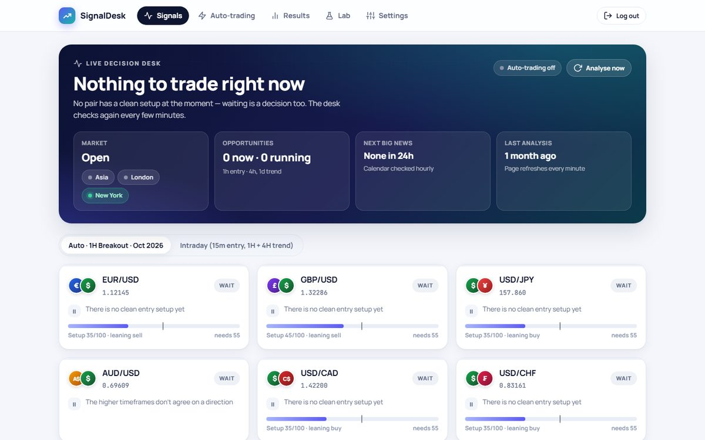
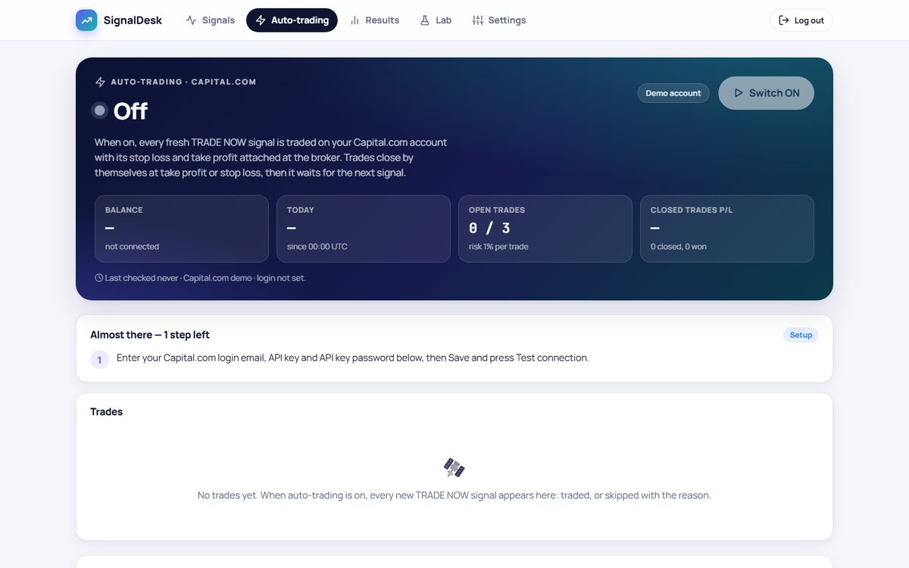

Trading status, stated plainly: the strategies are backtested on historical data, and since October 2026 the system has been forward-testing on a Capital.com demo account (virtual money). It has not traded real money. The plan is to review 4–8 weeks of demo results before considering a live account.
The problem
Manual trading decisions are inconsistent: traders enter too early, ignore news events and forget their own rules. SignalDesk turns a written trading plan into code that checks every market every few minutes and only acts when all the rules agree.

Trading logic
- Data: closed candles only (no repainting) for 8 instruments, from Yahoo by default, with Twelve Data and OANDA as optional providers.
- Analysis: higher-timeframe trend agreement, EMA trend, momentum (RSI, MACD), and a setup (pullback to the fast EMA or a 20-candle breakout), plus market condition (ADX, volatility, session).
- Score out of 100: TRADE NOW only if the score reaches the minimum and no hard WAIT rule applies (market closed, outside session, timeframes disagree, ranging market, RSI stretched, volatility spike, high-impact news due).
- Risk: stop loss beyond the last swing and never tighter than 1 ATR; take profit at a set risk-reward ratio; position size risks 1% of the balance; at most 3 open trades.
Backtesting and self-tuning
- A backtest engine replays history and records how often similar-scoring setups reached take profit before stop loss. The confidence shown on each signal comes from these real backtest results, not from a made-up number.
- Self-tuning is walk-forward: it picks the best parameter variation on the older 70% of the data and adopts it only if it also holds up on the newest 30%. Strategy discovery uses the same test.
- Every live signal is tracked to TP, SL or expiry on a Track record page, so backtest and forward results can be compared.

Reliability
- Server-side only: runs on Render with Neon PostgreSQL; an external cron calls the analysis every 5 minutes. Nothing needs to stay on a PC.
- Alerts on failure: every trade, and every error, is sent to Telegram.
- Broker-side protection: stop loss and take profit are attached at the broker, so a server outage can't leave a trade unprotected.
- Lessons turned into tests: the first demo trade was lost to a column-length overflow that SQLite tests didn't catch but production PostgreSQL did. I fixed it, added column-length tests, and made such failures alert immediately. The suite has 110 automated tests.